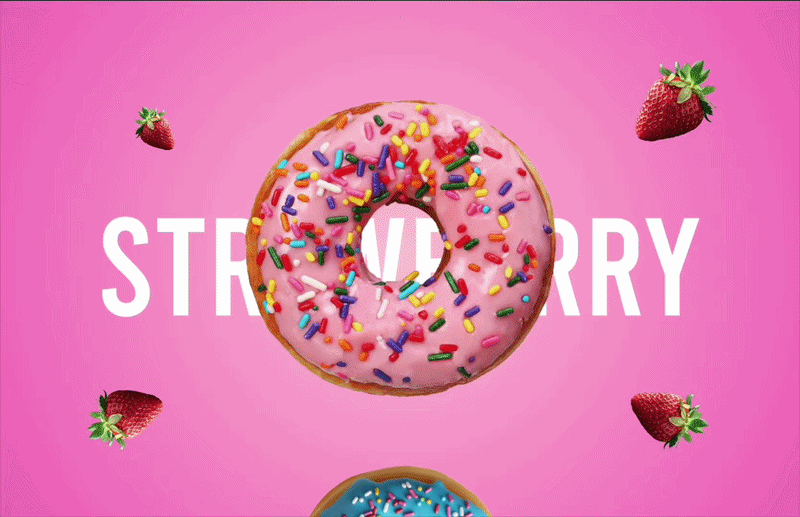

Designing clinician and patient experiences across AI-assisted workflows, reusable systems and shipped healthcare products.
Product designer · Toronto
Designing useful AI products with clarity, care and visual character.
I translate complex healthcare workflows into intuitive digital products—and use rapid prototyping and AI-assisted development to move ideas beyond static screens.
Explore selected workSelected work
Three ways I turn complexity into something people can use.
Visual practice
The same eye, applied beyond product screens.
Selected visual communication, campaigns and art practice—work that continues to shape how I use story, colour and composition digitally.

About
Product thinking grounded in visual craft—and brought closer to reality through AI.
I’m a product designer working across discovery, user flows, high-fidelity UI, design systems, implementation support and product QA. My current work focuses on AI-enabled healthcare products, where I collaborate with clinical, technical and business stakeholders to make complex experiences feel clear and trustworthy.
Start a conversation